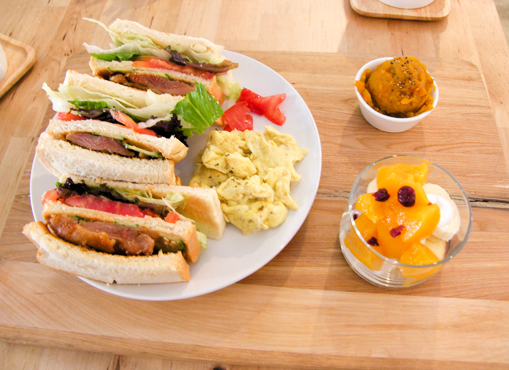
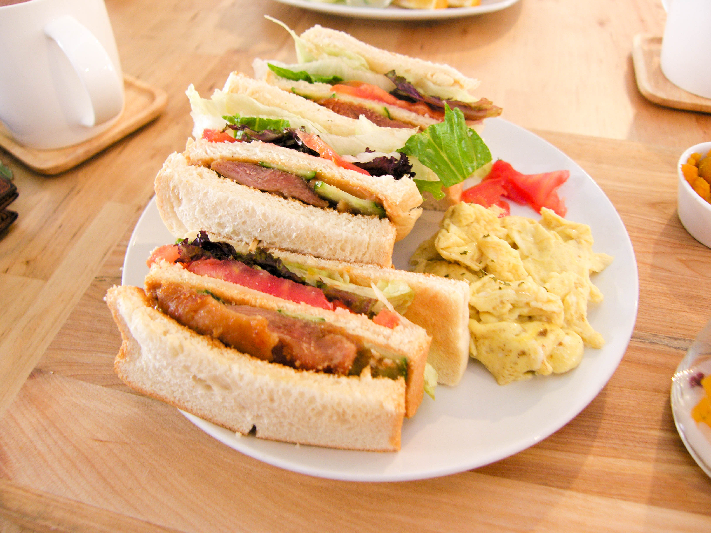
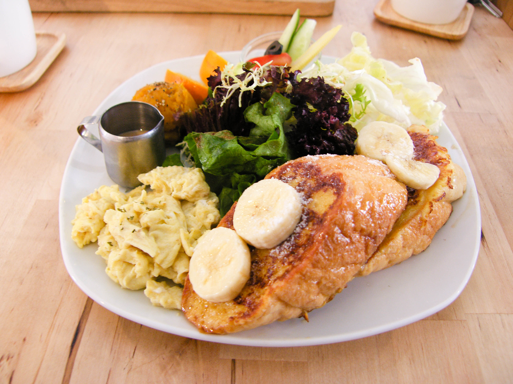
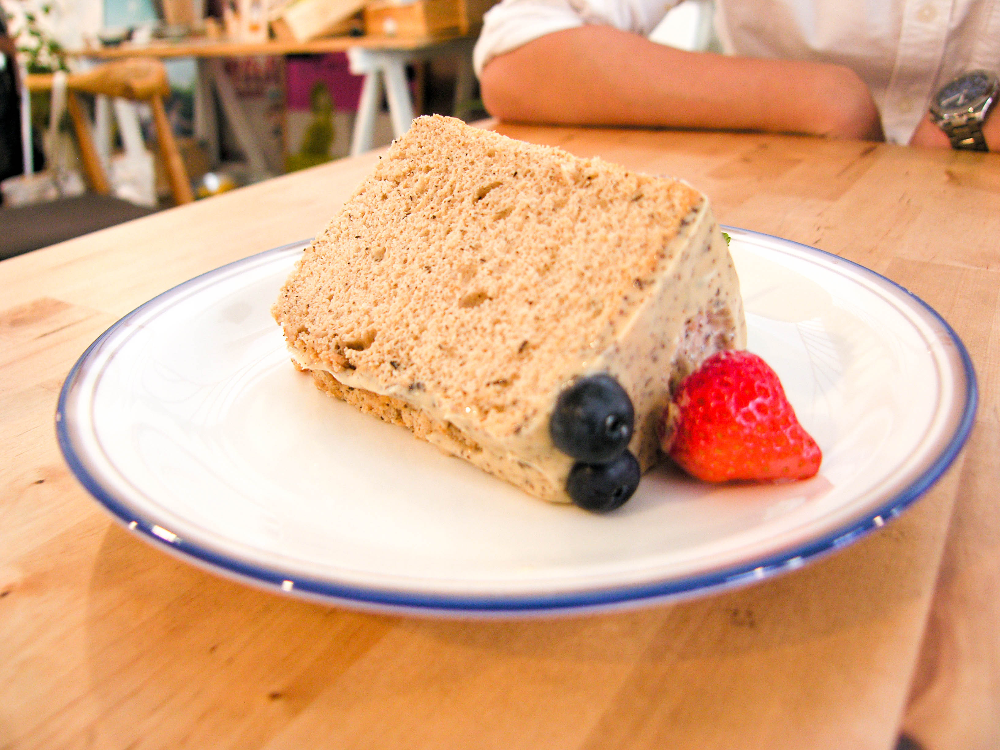

這家店叫「光宅238」
光宅238的位置就在宜蘭高中旁邊，而光宅還有另外一家叫做「光宅木圭」
位置則是在蘭陽女中旁邊，而賣的主要是手作蛋糕，餐點類的好像比較少
這兩家店好像是我高三的時候才有的，但也沒特別注意
不過這幾次回宜蘭就發現宜蘭真的多了好多好多好多家這種風格的小店喔
下次有機會再去光宅木圭！
光宅238就在宜中路上，因為剛好是238號，應該是因為這樣才取名為光宅238
因為店面並不醒目，很容易一不小心就錯過了(我那天就大錯過直接騎過去哈哈哈)
店面很乾淨明亮，布置的也很用心
而且因為同一條路上都是矮矮的老民宅
所以光宅算是加以利用老房子重新裝潢粉刷之後的樣子
當然外頭還是水泥地，，有一些老房子的痕跡，也算是一種特色
好了我要進入正題了
這邊早午餐供應的時間是 10:00-14:00 / 16:00-19:00
日式朝食則是 11:30之後 開始供應
鬆餅、三明治和纖蔬沙拉則是 14:00供應到20:00
早午餐的名字都取的很可愛，大家選擇的時候也可以看看下面的補充就知道是吃什麼了喔
而光宅最大的特色就是他的手作蛋糕(真的很美)
可以去看看當天的架子上面有什麼！
來介紹第一個是朋友點的花生奇雞 $198
 醃製入味的去骨雞腿肉以小火慢煎，
並搭配上滿滿的花生醬、厚厚的蕃茄切片
Lollo Rosa紅捲葉、結球萵苣、廣東Ａ菜
季節水果優格盅和新鮮牛奶炒的嫩蛋
平常就很喜歡吃花生醬的東西，這盤真的超好吃！
加上旁邊有炒嫩蛋和番茄，還有一小碗的南瓜泥(我真的超喜歡吃南瓜)
南瓜泥是很真實的南瓜味道，吃得出來就是真的南瓜去做的
而吐司裡面夾有雞肉、番茄和一些生菜
每片吐司之間都有抹上一點點花生醬
很好吃，鹹味中間有花生醬的甜味
整體很喜歡耶！
下一道是 HI BONJOR $178
選用法國長棍麵包，經過牛奶 雞蛋 蜂蜜 奶油浸漬後
淋上蜂蜜 撒上糖粉及熟香蕉
搭配上Lollo Rosa紅捲葉、Frisee綠捲鬚生菜、結球萵苣、廣東Ａ菜
黑橄欖片和季節果物新鮮牛奶炒的嫩蛋
本來還擔心會不會吃不飽，結果滿滿的一盤真的超豐盛的
吐司甜味很剛好，不會過甜(因為我不喜歡吃太甜的東西)
嫩蛋真的很好吃，生菜的部分也不馬虎，有好幾種生菜
也有番茄和橄欖，加上旁邊有附上有一小杯的醬料，吃起來很爽口
南瓜泥也很好吃，除此之外也有兩小片的柳丁
再來是剛剛一直沒有介紹到的手作蛋糕
也是光宅的特色(也是我第一個被他吸引的地方！！！)
來！你們看看！
蛋糕就這樣放在木頭架子上耶！
朋友一開始還以為是裝飾品哈哈哈哈
是不是很漂亮，我都忍不住一直看
距離最近的是宇治金時戚風，喜歡抹茶的朋友可以試試看
這個是比利時巧克力藍莓戚風，好漂亮好漂亮
而且他上面的藍莓真的毫不手軟耶！
其實我每個都超想吃的啦~~~
這個蛋糕是伯爵奶茶栗子戚風，栗子醬淋在周圍真的感覺好好吃
最後我點了這個～
好！那我現在來介紹我點的這個【伯爵奶茶栗子戚風】
要特別講一下，他們的戚風蛋糕每一塊都是100元喔！！！
是不是超便宜的，在台北好少能吃到這麼用心製作又便宜的蛋糕
而且光宅每個禮拜一戚風蛋糕內用是買一送一的喔！！！
是不是很划算～
說到這個戚風蛋糕，蛋糕口感很鬆軟，草莓跟藍莓也搭的剛剛好
最重要的就是那個栗子醬啦~~~那個栗子醬絕對是這塊蛋糕的亮點
蛋糕本身的味道是淡淡的茶味搭配上甜甜的栗子醬
真的很棒！大家來這裡一定要吃吃看他們的蛋糕